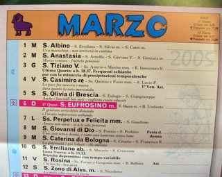

The Cappuccini monks publish every year the most popular almanac in Italy: Il Calendario di Frate Indovino (the almanac of monk Indovino). Started more than 60 years ago, this publication is filled with popular proverbs, advice on good and natural health, humor and wisdom. Each day of the year has associated one or more saints, yet not enough to represent all 10,000 named saints from history.